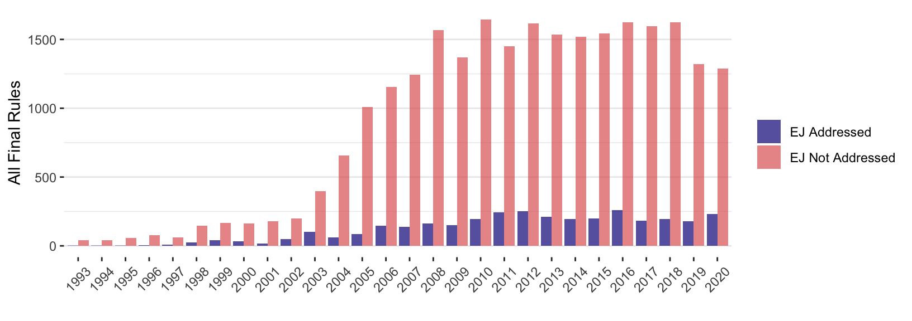
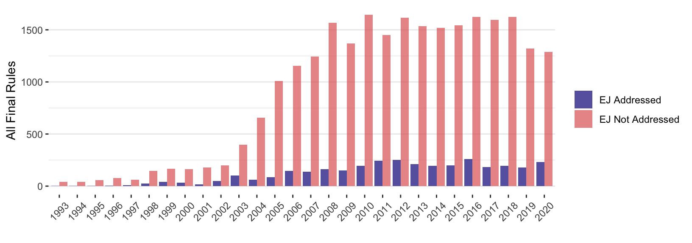

Chapter 4 The Environmental Justice Movement and Bureaucratic Policymaking
Abstract
Social movements play a critical role in advancing landmark statutes that recognize new rights and social values. Likewise, lack of movement pressure is a leading explanation for the failure of policy efforts. Yet, we have little systematic evidence about the impact of social movements on policy. To what extent do movements shape the thousands of policies that governments make every year? I examine how social movements affect policymaking by assessing the environmental justice movement’s impact on 25 thousand policy documents from 40 U.S. federal agencies. Leveraging a new dataset of 42 million public comments on these policies, I find that when public comments raise environmental justice concerns, these concerns are more likely to be addressed in the final rule. Effect sizes vary across agencies, possibly due to the alignment of environmental justice aims with agency missions. The magnitude of public pressure also matters. When more groups and individuals raise environmental justice concerns, policy texts are more likely to change, even when controlling for overall levels of public attention. These findings suggest that distributive justice claims, levels of public attention, and levels of public pressure all systematically affect policymaking.
4.1 Introduction
The previous chapter focuses on the lobbying success of organizations and coalitions in bureaucratic policymaking. This chapter uses similar data and measures to assess the impact of a social movement.
Social movements like the civil rights movement and the environmental movement are understood to have played a critical role in advancing landmark statutes recognizing new rights and social values. Likewise, a lack of movement pressure is a leading explanation for the failure of policy efforts to address issues like climate change (Skocpol 2013). Yet, we have little systematic evidence about the impact of social movements on modern policymaking. To what extent do movements shape the thousands of policies the government makes every year? I examine how social movements affect policymaking by assessing the environmental justice movement’s impact on 25 thousand policy processes in 40 U.S. federal agencies from 1993 to 2020. Environmental justice (EJ) concerns focus on unequal access to healthy environments and protection from harms caused by things like pollution and climate change (Bullard 1993). The environmental justice movement illustrates how activists attempt to inject ideas directly into the policymaking process. Systematic data on how policy documents address (or fail to address) environmental justice allow empirical tests of theories about when institutions will address claims raised by activists.
I focus on the environmental justice movement because it offers a broad but tractable scope for analysis and illuminates what is at stake in the politics of agency policymaking. Policies affect the distribution of resources and power. How policy documents address distributive justice issues highlights how policy processes construct communities of relevant stakeholders and appropriate criteria to evaluate policy consequences. Raising environmental justice concerns in policy debates is an example of how social movement organizations mobilize norms and evaluative frameworks that interact with organizational identities, missions, and reputations and, thus, impact policy decisions (D. P. Carpenter 2001).
Chapters 2 and 3 focused on majoritarian reasons that public pressure may affect policymakers (e.g., through impressions about the scale of public support or the involvement of a member of Congress). Here, I focus on an additional type of political information: claims about policy-relevant communities and their deservingness of governmental attention. Doing so turns the focus to how public pressure campaigns may also advance minority rights.
Tracing ideas like environmental justice through policy processes reveals the mechanisms by which social movements succeed or fail to influence policy. If draft policies do not mention EJ concerns, but activists raise EJ concerns that policymakers then address in the final policy, this may be evidence that public pressure mattered. Likewise, when draft policies do address EJ, if groups comment on it and then policymakers change how the final policy addresses EJ, this may be evidence that public pressure mattered.
I assess the impact of the EJ movement qualitatively and quantitatively. Tracing the evolution of EJ analyses through several policy processes shows that the concept is hotly contested and rarely addressed by agencies in ways that activists find acceptable. Activist pressure affected how policies addressed EJ in some cases but failed to affect other policies.
Examining all rules published by 40 agencies to regulations.gov between 1993 and 2020, I find that activist mobilization affected policy discourse, even under administrations explicitly hostile to their cause. When public comments raise EJ concerns, these concerns are more likely to be addressed in policy documents. Specifically, the number of comments mobilized (both overall and by EJ advocates specifically) is positively correlated with agencies adding language addressing EJ to policies where the draft policy did not mention EJ. When comments raise EJ concerns, sections of policies that do address EJ are also more likely to change. The correlation between EJ activist mobilization and policy changes is largest for agencies with missions focused on “environmental” and distributive policy—the kinds of policymakers we may expect to have institutional and cognitive processes primed to be most responsive to EJ concerns.
4.2 Theory: Distributive Justice Claims as Policy-relevant Information
4.2.2 Technical Information: The Currency of Lobbying
As discussed in the previous chapters, dominant theories of bureaucratic policymaking have little room for social movements and political pressure. Instead, they focus on how agencies learn about policy problems and solutions (Kerwin and Furlong 2011). Leading formal models are information-based models where sophisticated lobbying groups affect policy by revealing information to the agency (Gailmard and Patty 2017; Libgober 2018), and empirical studies support the conclusion that information is the currency of lobbying in rulemaking (S. W. Yackee 2012; Cook 2017; Gordon and Rashin 2018; Daniel E. Walters 2019a).
Agency rulemaking is an especially technocratic and legalistic form of policymaking that explicitly privileges scientific and legal facts as the appropriate basis for decisions. Procedural requirements to consider relevant information create incentives for lobbying groups to overwhelm agencies with complex technical information, making rulemaking obscure to all but the most well-informed insiders (Wagner 2010). Influence in rulemaking generally requires resources and technical expertise (S. W. Yackee 2019).
The result is that rulemaking is dominated by sophisticated and well-resourced interest groups capable of providing new technical or legal information. Empirical scholarship finds that economic elites and business groups dominate American politics in general (Jacobs and Skocpol 2005; Soss, Hacker, and Mettler 2007; Hertel-Fernandez 2019; J. Hacker 2003; Gilens and Page 2014) and rulemaking in particular (Seifter 2016; Crow, Albright, and Koebele 2015; Wagner, Barnes, and Peters 2011; W. F. West 2009; J. W. Yackee and Yackee 2006; S. W. Yackee 2006; Golden 1998; S. F. Haeder and Yackee 2015; Cook 2017; Libgober and Carpenter 2018). To the extent that scholars address public pressure campaigns, both existing theory and empirical scholarship suggest skepticism that public pressure campaigns matter. For example, Steven J. Balla et al. (2018) find that “legal imperatives trump political considerations” (p. 1). (See Sections 2.2.2.1 and 3.2.1 for reviews of scholarship on mass comment campaigns and their impact on policy.) My analysis in Chapter 3 also shows no clear relationship between public pressure and lobbying success. Causes that directly confront elite and business interests, like the environmental justice movement, may be especially unlikely to influence bureaucratic policymaking. Alternatively, it is also possible that some social movements have normative and political resources sufficient to overcome the technocratic biases of bureaucratic policymaking.
4.2.3 Political Information
While social movement organizations do engage in fights over technical reports and scientific studies, the information that activists provide is often more overtly political. As discussed in Section 2.2, Nelson and Yackee (2012) identify political information as a potentially influential result of groups expanding their lobbying coalition. While they focus on mobilizing experts, they describe a dynamic that can be extended to mobilizing public pressure:
coalition lobbying can generate new information and new actors—beyond simply the ‘usual suspects’ —relevant to policy decisionmakers. (p. 343)
Expanding on the arguments about the potential value of political information advanced in the previous chapters, I argue that mobilizing new actors to participate in the policymaking process may yield information about a policy’s disparate effects. Information about a policy’s disparate effects is an additional form of political information. Like levels of public attention and pressure, the normative appeal of distributive justice claims can be a political resource, potentially allowing groups to change policymakers’ perceptions of their political environment and the political consequences of their decisions.
4.2.3.1 Information About a Policy’s Disparate Effects
The politics and outcomes of policymaking depend on how the relevant groups are defined (Theodore J. Lowi 1964). While specific data on disparate impacts of policy may require expertise (Ganz and Soule 2019), anyone can highlight a community of concern or potential distributive effects of a policy. Identifying communities of concern is a political statement that does not require technical expertise. Just as Nelson and Yackee (2012) found regarding mobilizing diverse experts, mobilizing diverse communities affected by a policy may introduce new claims from new actors about how the communities that a policy may benefit or harm should be constructed.
Informing policymakers about how a particular set of stakeholders will be affected can be a lobbying tactic. Distributive justice claims simultaneously assert that a particular group deserves specific attention and demand that the policymaker account for how that group may be impacted, both of which may require revisions to the policy. Likewise, an organization may tell policymakers what a key constituency or affected groups think about the proposed policy—for example, whether they support or oppose the policy. Instead of bolstering scientific claims, such comments that focus on a policy’s disparate impacts bolster political claims about who counts and even who exists as a distinct, potentially affected group that deserves policymakers’ attention.
The political construction of policy-relevant groups through the policy process has long interested administrative law scholars. Gellhorn (1972) argues that “individuals and groups willing to assist administrative agencies in identifying interests deserving protection” (p. 403) improve the policy process. Seifter (2016) argues that policymaker’s beliefs about who is lobbying them and who those groups represent ought to be (and likely is) key to how they respond.
The power of groups to affect policy depends on their recognition by formal and informal institutions. All organizations systematically privilege some policy problems, solutions, and types of information over others.
All forms of political organization have a bias in favor of the exploitation of some kinds of conflict and the suppression of others because organization is the mobilization of bias. Some issues are organized into politics, while others are organized out. (Elmer E. Schattschneider 1975, 71)
Public comment periods in agency rulemaking are formally more “identity neutral” than policy processes with procedural rights reserved for certain interests (Feinstein 2021). This means that the political construction of relevant groups depends on who participates and the identities they mobilize or claim to represent. As S. W. Yackee (2019) and others note, the information costs mean that individuals rarely participate. Instead, groups claim to represent various constituencies. “Because the costs of individualized participation in policy decision making are often excessive, informal representatives are prevalent as a form of participation in agency decisions” (Rossi 1997, 194).
Bureaucratic policymaking in the United States is dominated by cost-benefit analysis, which requires defining groups that are benefited or harmed by a policy and may even weigh or prioritize benefits or costs to certain groups. Agencies have many reasons to consider the distributional effects of policy and often do. For example, President Biden issued a memorandum instructing the Director of the Office of Management and Budget to propose recommendations for “procedures that take into account the distributional consequences of regulations.” Thus, comments raising distributive concerns provide potentially influential political information.
This distributive information raises claims of distributive justice. Public comment periods are celebrated as “a crucial way to ensure that agency decisions are legitimate, accountable, and just” (Bierschbach and Bibas 2012, 20). “Public participation can force agencies to rethink initial inclinations” (Seifter 2016, 1329)—such as which social groups are relevant or deserve special attention. Courts purportedly review policy decisions made through rulemaking with a particular eye toward whether they foster “fairness and deliberation” (United States v. Mead Corp., 2001) and occasionally note the volume or diversity of participants in the public comment process (e.g., Vermont Yankee v. NRDC, 1978). While there is mixed empirical evidence about the importance of policy processes for judicial review, the number of public comments received on a draft policy is associated with courts letting the final agency policy stand (Judge-Lord 2016). Despite the dominance of business groups and seeming lack of success for public pressure campaigns in general, claims of distributive justice may have a unique role in bureaucratic policymaking.
4.2.3.2 Public Pressure as a Political Resource
The chances that an agency will address distributive justice claims may be affected by other political factors, including the overall levels of public attention or public pressure. As theorized in Section 3.2, the number of supporters may matter because it indicates support among relevant communities or the broader public. Again, instead of bolstering scientific claims, perceived levels of public support bolster political claims. An organization’s ability to expand the scope of conflict by mobilizing a large number of people can be a valuable political resource (Elmer E. Schattschneider 1975).
I argued in Chapter 2 that interest groups and their lobbying coalitions are the proper units of analysis, and individual participants are best understood as measuring an amplitude of support for their efforts. While scholars often compare the participation of groups from individual citizens (see S. W. Yackee (2019) for a review), “it can be difficult to distinguish an individual’s independent contribution from an interest-group-generated form letter” (Seifter 2016, pg. 1313). As (Rossi 1997, 194) argues, “individuals are most likely to participate in agency decisions by virtue of their membership in interest groups.” Indeed, as I demonstrated in Section 2.4, nearly all individual comments on proposed policies are mobilized by interest groups. Researchers should view the participation of individuals as a direct result of interest group mobilization and can ignore the small number of unaffiliated individuals.
Because many politically active groups are “memberless” or run by professionals who lobby with little input from their members (Baumgartner and Leech 2001; Skocpol 2003; K. L. Schlozman, Verba, and Brady 2012), evidence of an actual constituency is valuable political information. Petition signatures and form letters are among the only ways a pressure group can demonstrate an engaged and issue-specific constituency on whose behalf they claim to advocate. While lobbying disclosure requirements could provide other information about how well groups represent the constituencies they claim to represent (Seifter 2016), letter-writing campaigns are one of the only strategies currently available to demonstrate issue-specific congruence between the positions of groups and the people they claim to represent (see Chapter 2).
Finally, building on the distinction between direct and indirect influence set out in 2.2, expanding the scope of conflict by mobilizing public attention to rulemaking may shift policymakers’ attention away from the technical information provided by the “usual suspects” and toward the distributive effects of policy. The “fire alarm” role that interest groups play in the policy process (Mathew D. McCubbins and Schwartz 1984) may have different effects when sounding the alarm also involves “going public.”
4.2.4 Hypotheses
The existing literature on bureaucratic policymaking in general—and EJ advocacy in particular—presents competing intuitions about the effect of EJ activists and the broader public in rulemaking. From the above discussion about the potential impacts of political information in bureaucratic policymaking, I distill five hypotheses—three about distributive information and two about public pressure. I posit each hypothesis in the direction that advocacy groups do affect rulemaking while also noting equally plausible intuitions for the opposite conclusions. Because of the general skepticism and empirical work that has found that advocacy groups and public pressure campaigns have little to no effect on rulemaking, I set the empirical bar low: do EJ advocates and public pressure campaigns have any effect at all on policy documents. Rather than focusing on substantive policy changes as I did in Chapter 3, the dependent variable for my analyses in this chapter is more discursive: I now include response to environmental justice claims in policy documents in my measures of lobbying success, not just substantive policy changes that groups may demand.
4.2.4.1 Distributive Information Hypotheses
Distributive Claims Hypothesis:
As discussed above, agency policymakers have incentives to address distributive concerns, especially environmental justice, due to E.O. 12898 and judicial review of compliance with the Administrative Procedures Act. By raising EJ concerns, commenters draw attention to the distribution of policy impacts—who a policy may affect. Asserting definitions and categories of stakeholders and affected groups is one type of policy-relevant information.
Repeated Claims Hypothesis:
Scholarship on lobbying in rulemaking emphasizes the value of repeated information and coalition size (Mendelson 2011; Nelson and Yackee 2012). This implies that the more unique comments that raise EJ concerns, the more likely it is that their coalition will influence the policy process. As described below, I distinguish unique comments from mass comments. The number of unique comments approximates a coalition’s size regarding the number of different groups, each submitting a unique text. The total number of comments, including signatures on identical form letters, indicates public attention and pressure.
Competing intuitions and other prior studies oppose both Hypotheses 4.1 and 4.2. First, formal models and empirical scholarship on lobbying in rulemaking emphasize the importance of novel science and technical information—things unknown to agency experts (Wagner 2010). Claims about distributive justice, especially the repetition of such claims, provides no new technical information. Second, business commenters are influential, and public interest groups are not (J. W. Yackee and Yackee 2006; S. F. Haeder and Yackee 2015). Because environmental justice claims often conflict with business interests, such claims may be especially disadvantaged. Finally, policymakers may be more likely to anticipate EJ concerns when they are more salient to interest groups. This would mean that rules where commenters raise EJ concerns may be the least likely to change whether or how EJ is addressed because policymakers are more likely to have already considered these issues and stated their final position in the draft rule.
Policy Receptivity Hypothesis:
Some agencies may be more receptive to certain kinds of lobbying—for example, claims about distributive justice—than others. Bureaucracies are specialized institutions built to make and implement certain kinds of policies based on certain goals and types of facts. Each agency has distinct norms and epistemic communities. Some may see the same issue as “environmental” where others do not. Likewise, some may see disparate impacts that demand consideration of distributive “justice” where other officials with different norms and training see no such disparity. In short, some policymakers may see their policy area as more related to environmental justice than others and thus be more receptive to commenters’ concerns.
The competing intuition to Hypothesis 4.3 is that policymakers familiar with EJ concerns are least likely to respond to EJ concerns because they anticipate these concerns—they are not novel to them. If so, agencies that rarely consider EJ may be more easily influenced by commenters who present somewhat novel information and concerns. These policymakers may be less likely to have preempted EJ critiques in the draft policy.
4.2.4.2 Public Pressure Hypotheses
Public Attention Hypothesis:
If policymakers respond to public pressure, policy should be more likely to change when more people comment on a draft policy. This follows the intuition that policy is most likely to move in high-salience policy processes (Leech 2010).
The competing intuition against Hypothesis 4.4 is again that large numbers of comments indicate policy processes that were already salient before the public pressure campaign. Anticipating public scrutiny, policymakers would be more likely to have stated their final position in the draft policy. If this is the case, policies with more public comments should be less likely to change. Public attention could also be unrelated to policy change, meaning that policymakers neither anticipate nor respond to public attention in writing or revising policy documents.
Public Pressure Hypothesis:
This hypothesis asserts that the overall level of public attention will condition policy responses to specific claims–it is the interaction between the number of total public comments and at least one of those comments raising EJ concerns that makes policy more likely to address EJ.
The competing intuition against Hypothesis 4.5 is again that large numbers of comments indicate high-salience rulemakings where policymakers are more likely to anticipate public scrutiny, including how they did or did not address specific issues like environmental justice. If policymakers anticipate public scrutiny, they may be more likely to preempt EJ concerns and state their final position in the draft policy.
4.3 Testing the Theory
4.3.1 Environmental Justice as a Boundary-drawing Tool
The politics of environmental justice has several convenient properties for studying the policy impact of social movements. First, discourse around policies framed as “environmental” issues are, unlike issues like civil rights and immigration, inconsistently racialized and, unlike issues like taxes and spending, inconsistently focused on distributions of costs and benefits. This means that policies may or may not be framed in environmental justice terms. Despite policy almost always having disparate impacts, an “environmental” frame often creates a human-environment distinction and shifts attention to non-human objects such as air, water, food, or landscapes and away from the distribution of access to them or protection from them when they are contaminated. By focusing on distributions of costs and benefits, fights over EJ analyses differ from more traditional utilitarian or preservationist analyses.
Second, compared to other ideas around which people mobilize, “environmental justice” is a fairly distinctive phrase. Most people who use this phrase share a general definitional foundation. Even attempts to reframe the term (e.g., to focus on class rather than race or jobs rather than health) come about as dialectical moves related to the term’s historical uses. Thus, when “environmental justice” appears in a text, it is rarely a coincidence of words; its appearance is a result of the movement or reactions to it.
Third, this phrase appears frequently when the idea is discussed. There are few synonyms. Groups raising equity concerns on environmental issues commonly use the phrase “environmental justice.” Those who use narrower, related terms—including the older concept of “environmental racism” and the newer concept of “climate justice”—almost always use “environmental justice” in their advocacy as well.
Finally, the term is relevant to rulemaking records in particular because Executive Order 12898 was issued in 1994 by President Clinton—“Federal Actions to Address Environmental Justice in Minority Populations and Low-Income Populations”—directs all agencies to consider EJ implications of their actions and policies. Executive Orders from Presidents Obama and Biden and statements from agency heads in every administration have since interpreted and reinterpreted parts of this Order, all with direct implications for rulemaking. This does not mean that all draft or final rules address EJ, but they tend to cite Executive Order 12898 and explicitly discuss environmental justice when they do. For the same reason, commenters who critique draft rules also cite this Executive Order and use this language. Again, this is true both for movement activists and reactionary efforts to redefine the term. While EO 12898 does not itself create a right to sue agencies, courts may strike down rules for failing to comply with procedural requirements of the Administrative Procedures Act (APA) and National Environmental Policy Act (NEPA) if the agency fails to “examine the relevant data” or “consider an important aspect of the problem” (Motor Vehicle Mfrs. Ass’n v. State Farm Mut. Auto. Ins. Co., 1983). This can include an agency’s 12898 EJ analysis: “environmental justice analysis can be reviewed under NEPA and the APA” (Communities Against Runway Expansion, Inc. v. FAA, 2004). The legal salience of the phrase “environmental justice” means that advocates attempting to frame policies in distributive terms tend to use the phrase, and agencies also tend to use it if they respond to these concerns.
4.3.2 Data
To examine whether EJ activists and public pressure campaigns shape policy documents, I collect the text of all draft rules, public comments, and final rules from regulations.gov. Then, I select rulemaking documents from agencies that published at least one rule explicitly addressing EJ from 1993 to 2020. This yields over 25,000 rulemaking dockets from 40 agencies; 12,257 of these have both a proposed and final rule.14
Despite E.O. 12898, most rules do not address EJ. Figure 4.1 shows that most draft and final rules (about 90 percent) do not mention “environmental justice.” The number of policies that take EJ into account (rather than just mentioning the E.O. 12898) is likely even lower (Gauna et al. 2001; Revesz 2018). Interestingly, the total number of final rules and the percent of the total addressing EJ have remained relatively stable for the period where regulations.gov data are complete (after 2005). From 2006 to 2020, these agencies published between 2000 and 3000 final rules per year, of which between 200 and 300 addressed EJ.
 

Figure 4.1: Proposed and Final Rules by Whether they Address Environmental Justice.
Even at the Environmental Protection Agency (EPA), where most policies are clearly framed as “environmental” issues, a consistent minority of rules address EJ. Many agencies that make policy with apparent EJ effects almost never address EJ. These include the Fish and Wildlife Service (FWS), Department of Housing and Urban Development (HUD), National Oceanic and Atmospheric Administration (NOAA), Nuclear Regulatory Commission (NRC), and the Office of Surface Mining (OSM). A majority of rules addressed EJ only in a few years at a few agencies that publish relatively few rules, including the Council on Environmental Quality (CEQ), Army Corps of Engineers (COE), Federal Emergency Management Agency (FEMA), Forest Service (FS), and several Department of Transportation agencies (the Federal Highway Administration (FHWA), Federal Motor Carrier Safety Administration (FMCSA), Federal Railroad Administration (FRA), and Federal Transit Administration (FTA)). Figure 4.2 shows the number of rulemaking projects over time by whether they ultimately addressed EJ at agencies that either published more than ten rules addressing EJ or receiving over 100 comments raising EJ concerns.
![Number of Proposed and Final Rules Addressing Environmental Justice at the Council on Environmental Quality (CEQ), Army Corps of Engineers (COE), Department of Transportation (DOT), Environmental Protection Agency (EPA), Federal Emergency Management Agency (FEMA), Federal Highway Administration (FHWA), Federal Motor Carrier Safety Administration (FMCSA), Federal Railroad Administration (FRA), Forest Service (FS), Federal Transit Administration (FTA), Fish and Wildlife Service (FWS), Department of Housing and Urban Development (HUD), National Highway Transportation Saftey Administration (NHTSA), National Oceanic and Atmospheric Administration (NOAA), Nuclear Regulatory Commission (NRC), and Office of Surface Mining (OSM)](Figs/ej-data-agencies100-1.png)
Figure 4.2: Number of Proposed and Final Rules Addressing Environmental Justice at the Council on Environmental Quality (CEQ), Army Corps of Engineers (COE), Department of Transportation (DOT), Environmental Protection Agency (EPA), Federal Emergency Management Agency (FEMA), Federal Highway Administration (FHWA), Federal Motor Carrier Safety Administration (FMCSA), Federal Railroad Administration (FRA), Forest Service (FS), Federal Transit Administration (FTA), Fish and Wildlife Service (FWS), Department of Housing and Urban Development (HUD), National Highway Transportation Saftey Administration (NHTSA), National Oceanic and Atmospheric Administration (NOAA), Nuclear Regulatory Commission (NRC), and Office of Surface Mining (OSM)
4.3.2.2 Interest Groups and Second-order Representation
When lobbying during rulemaking, groups often make dubious claims to represent broad segments of the public (Seifter 2016). Thus, to interpret substantive results or the normative import of any findings in this analysis, it is insufficient to know which groups participate. We also need to know who these groups claim to represent and whether those people are actually involved in the organization’s decisions. As Seifter argues:
the expertise a group claims is often based on its ability to convey a particular constituency’s perspective, experience, or concerns…A group that does not have or engage with a membership cannot reliably convey those sorts of constituency-based insights. Moreover, even when a group’s assertions seem independent of a constituency—say, the results of a scientific study—information about second-order participation matters. Understanding the group’s sources, funding, and potential biases is important to assessing the reliability of its information and its contribution to agency expertise (Seifter 2016, 1306).
Examining second-order representation is thus required to assess “what contemporary participation does and does not achieve” (Seifter 2016, pg. 1306)—for example, the extent to which EJ concerns (and any potential policy response) indicate genuine social movement advocacy and influence. Recall that EJ is a contested concept used to evoke different distributive claims by different groups. The prevalence and impact of EJ concerns in the policy process are only meaningful against the backdrop of who exactly is using EJ rhetoric.
I examine who is raising EJ concerns in two ways. First, I identify the top organizational commenters such as tribes, businesses, and nonprofits using EJ language and investigate whom these groups represent. Second, for comments where commenters signed their name, I compare surnames to their racial and ethnic identity propensities in the U.S. Census. Together these two pieces of information allow me to comment on “second-order” representation. This is a proxy for the extent to which public comments are representative of the groups they claim to represent (Seifter 2016).
4.3.2.2.1 Which Organizations Most Often Raise EJ Concerns?
To explore who raises EJ concerns, I first identify the organization behind each comment through a mix of hand-coding and text analysis. This includes organizational comments on signed letterhead and individuals who use the text of a form letter provided by an organization. I then investigated the top 20 organizations that mobilized the most comments (form letters) mentioning “environmental justice” and all organizations that raised EJ concerns on more than one policy.
The top mobilizer of comments mentioning “environmental justice” between 1993 and 2020 was the Sierra Club, with over 340,000 comments mentioning EJ on dozens of rules. The Sierra Club is a membership organization whose members pay dues, elect the leaders of local chapters and have some say in local advocacy efforts. However, its policy work is directed by a more traditional national advocacy organization funded by donations, including over $174 million from Bloomberg Philanthropies that funded several of the public pressure campaigns in these data. The Sierra Club does have a major program arm dedicated to Environmental Justice that works with local partners “to foster the growth of the environmental justice movement so that oppressed communities will find justice and everyone can experience the benefits of a healthy and sustainable future”(Club 2021). The extent to which those individuals have a formal say in the national organization’s lobbying decisions varies across campaigns. The National Board of Directors adopted a statement on social justice in 1993 and principles on environmental justice in 2001. The national website does contain regular Spanish language content. As a federated organization with many local efforts, it is difficult to generalize about second-order representation.
The second most prolific organizer of EJ comments was Earthjustice, with over 175,000 comments on many of the same rules that the Sierra Club lobbied on. Earthjustice is primarily engaged in litigation on behalf of environmental causes. Their website boasts 2.2 million supporters, but it is not clear who they are or if they play any role in the advocacy strategy. A search on the website returns 360 results for “Environmental Justice,” with the top results from staff biographies who work on more local or targeted campaigns, such as environmental conditions for the incarcerated. The EJ language used on the main page is relatively vague. For example, “We are fighting for a future where children can breathe clean air, no matter where they live.” (Earthjustice 2017). The website does contain some Spanish-language content.
The Natural Resources Defense Council is similar to Earthjustice—a national nonprofit funded by donations and focused on litigation—but they also lobby and organize public pressure campaigns, including over 160,000 comments mentioning environmental justice.
CREDO Action and MoveOn are more generic progressive mobilizers who lack a systematic focus on EJ issues, but occasionally leverage their vast membership and contact lists to support EJ campaigns led by others.
The Alliance for Climate Protection is more of an elite political group founded by former Vice President Al Gore.
We Act and Communities for a Better Environment both have environmental justice in their central mission statement. Community leaders founded We Act in Harlem, New York, to advocate against environmental racism and poor air quality (WEACT 2017). Communities for a Better Environment has projects throughout California but is particularly active in Oakland (CBECAL 2017). Much of the content of their website is in both English and Spanish. Both organizations focus primarily on “low-income communities of color” and frame their work primarily in terms of race and class. While both organizations participated in national policymaking, WeAct is more focused on communities in Harlem and New York, whereas Communities for a Better Environment casts a broader frame: “CBE’s vision of environmental justice is global—that’s why the organization continues to participate in such international efforts as the Indigenous Environmental Network and the Global Week of Action for Climate Justice” (CBECAL 2017).
While not a large portion of EJ comments, private companies repeatedly raise research about the unequal impacts of policy to frame these issues as a legitimate but unresolved scientific debate that is not yet conclusive enough to base regulations on, mirroring the way tobacco and fossil fuel companies have emphasized scientific uncertainty in their lobbying efforts. For example, in one comment, the Southern Company wrote:
People with lower SES are exposed to almost an order of magnitude more traffic near their homes (Reynolds et al., 2001), and live closer to large industrial sites and are exposed to more industrial air pollution (Jerrett et al., 2001). Legitimate health concerns must be addressed. But adopting standards with a scientific basis so uncertain that health improvement cannot be assured is not sound public health policy. (EPA-HQ-OAR-2004-0018-0211)
Other electric utility companies and the American Chemistry Council (the Chemical Industry’s Trade Association) submitted nearly identical language on multiple proposed rules. Like many companies, the Southern Company claimed to represent its customers: “electric generating companies and their customers are expected to bear much of the burden” of regulations (EPA-HQ-OAR-2004-0018-0211). Yet, customers have little say in companies’ decisions.
Overall, regarding second-order representation, it appears that the groups most often using the language of environmental justice may do so sincerely but generally represent affected communities in a surrogate capacity (J. Mansbridge 2003). Several groups representing local communities and led by community leaders have participated, but not nearly as often or with the same intensity as the “big greens.” The domination of large advocacy organizations highlights the importance of resources as a condition for lobbying and mobilizing. Not all groups that may benefit from generating political information can leverage it because they lack the resources to fund a campaign or even comment on relevant policies. However, smaller, more member-driven groups may partner with national groups that have more resources to mobilize on their behalf. Finally, a third, much less common type of commenter raises EJ issues to reframe them as ongoing debates and thus undermine their urgency. I call this reason for engaging an attempt to “break a perceived consensus.” In a way, the fact that energy companies felt compelled to acknowledge and question EJ concerns suggests their importance for policy outcomes.
4.3.2.2.2 Commenter Race
To estimate the racial distribution of commenters using EJ language, I select commenters who signed with a surname appearing in Census records. Figure 4.4 shows a probabilistic racial distribution of commenters who raise EJ concerns in their comments based on the distribution of self-reported racial identities associated with surnames as recorded in the 2010 census.15 I estimate this distribution using the proportion of people with a given surname identified as belonging to each racial category (from this limited set of options). This approach does not assign specific individuals to racial categories. Instead, it represents each commenter as a set of probabilities adding up to 1. The estimated racial distribution of the sample is the sum of individual probabilities.
Figure 4.4: Estimated Racial Distribution from Census Surnames of Commenters raising ``Environmental Justice" Concerns in Rulemaking
Compared to the overall distribution in the 2010 census, this sample of commenters appears to be slightly disproportionately Black and less than proportionately Latinx or Asian, with just slightly fewer Whites relative to the national population. This is unsurprising, given that Black Americans have led theorizing and activism around environmental justice (Bullard 1993).
4.3.3 Tracing Ideas Through Rulemaking: Environmental Justice as a Contested Concept
Using an environmental justice frame does not always imply the same communities of concern. Environmental justice emerged from movements against environmental racism, especially the disposal of toxic materials in predominantly Black neighborhoods (Bullard 1993). However, the term quickly took on other meanings, encompassing various marginalized groups. President Clinton’s 1994 Executive Order on Environmental Justice required all parts of the federal government to make “addressing disproportionately high and adverse human health or environmental effects of programs, policies, and activities on minority populations and low-income populations” a core aspect of their mission. This meant considering the disproportionate effects of policies by race and income during rulemaking.
In 2005, Environmental Protection Agency (EPA) political appointees reinterpreted the Order, removing race as a factor in identifying and prioritizing populations. This move was criticized by activists and two reports by EPA’s own Office of Inspector General (EPA-OIG-2004-P-00007 and EPA-OIG-2006-P-00034).
President Obama’s EPA Administrators reestablished race as a factor. They named EJ as one of their top priorities, but they also faced criticism from activists for paying lip service to environmental racism without adequate policy changes.
In an October 2017 proposed rule to repeal restrictions on power plant pollution, the Trump EPA acknowledged that “low-income and minority communities located in proximity to [power plants] may have experienced an improvement in air quality as a result of the emissions reductions.” Because the Obama EPA discussed EJ when promulgating the Clean Power Plan rule (stating that “climate change is an environmental justice issue”), the Trump EPA attempted to reframe rather than ignore environmental justice. The Trump EPA contended that the Obama EPA “did not address lower household energy bills for low-income households [and that] workers losing jobs in regions or occupations with weak labor markets would have been most vulnerable” (EPA 2017). Like regulated industry commenters, these statements frame the distribution of jobs and electricity costs as EJ issues in order to push back against policies that would equalize the distribution of health impacts from pollution.
The central conflict over the role of race in policy analyses is just one of many conflicts that the environmental justice movement has caused to be fought somewhat on its terms. The next section briefly reviews the decades-long policy fight over regulating Mercury pollution to illustrate how these definitional conflicts shape rules and rulemaking. This case and other examples in this article emerged from reading hundreds of rulemaking documents where agencies did and did not respond to comments raising EJ concerns. Their purpose is to assess whether the cases in the quantitative analysis are plausibly what they appear to be: that changes in rule text are, sometimes, causally related to public comments and that non-changes are cases of agencies disregarding comments, not some accident of the data or measures. The qualitative reading also confirmed other key assumptions, such as the fact that advocates do, in fact, use “environmental justice” when they raise distributional concerns, even on many rules that are not about issues traditionally considered “environmental.”
4.3.3.1 The Evolving Distributional Politics of Mercury Pollution
Definitions of the public good and minority rights are implicit in most policy documents, including agency rules. The public comment process offers an opportunity to protest these definitions. Protest is one way that marginalized groups can communicate opinions on issues to government officials (Gillion 2013). In the EPA’s Mercury Rules, two definitional issues were decisive. First, as with many forms of pollution, mercury-emitting power plants are concentrated in low-income and non-White communities. Second, some populations consume much more locally-caught freshwater fish, a major vector of Mercury toxicity. Studies inspired by the political controversy around the Mercury Rules found high risk among certain communities, including “Hispanic, Vietnamese, and Laotian populations in California and Great Lakes tribal populations (Chippewa and Ojibwe) active on ceded territories around the Great Lakes” (EPA 2012). Thus the standards that EPA chooses depend on whom the regulation aims to protect: the average citizen, local residents, or fishing communities. This decision has disparate effects based on race and class because of disparate effects based on geography and cultural practices.
In December 2000, when the EPA first announced its intention to regulate Mercury from power plants, the notice published in the Federal Register did not address EJ issues, such as the disparate effects of mercury on certain populations; it only discussed anticipated impacts in reference to “the U.S. population” (EPA 2000). When the first draft rule was published, it only discussed the effects of the rule on regulated entities, noting that “Other types of entities not listed could also be affected” (EPA 2002). Commenting on this draft, Heather McCausland of the Alaska Community Action on Toxics (ACAT) wrote:
The amount of methyl-mercury and other bioaccumulative chemicals consumed by Alaskans (especially Alaskan Natives) could potentially be much higher than is assumed… [This could increase] the Alaskan Native mortality rate for babies, which according to the CDC, is 70% higher than the United States verage. Indigenous Arctic & Alaskan Native populations are some of the most polluted populations in the world. Global transport & old military sites contaminate us too.
By citing the CDC, McCausland’s comment provided both technical and distributive information. As allies mobilized, public pressure mounted to address the disparate impacts of mercury levels. After receiving hundreds of thousands of comments and pressure from tribal governments and organizations, a revised proposed rule echoed McCausland’s comment noting that
Some subpopulations in the U.S., such as Native Americans, Southeast Asian Americans, and lower-income subsistence fishers may rely on fish as a primary source of nutrition and/or for cultural practices. Therefore, they consume larger amounts of fish than the general population and may be at a greater risk of the adverse health effects from Hg due to increased exposure (04-1539/p-719).
After nearly a million additional public comments, a further revised proposed rule ultimately included five pages of analysis of the disparate impacts on “vulnerable populations” including “African Americans,” “Hispanic,” “Native American,” and “Other and Multi-racial” groups (EPA 2011). In the final rule, “vulnerable populations” was replaced with “minority, low income, and indigenous populations” (EPA 2012). The EPA had also conducted an analysis of sub-populations with particularly high potential risks of exposure due to high rates of fish consumption as well as additional analysis of the distribution of mortality risk by race.
Of this second round of comments, over 200 unique comments explicitly raised EJ issues. The Little River Band of Ottawa Indians expressed the Tribe’s
…frustration at trying to impress upon the EPA the multiple and profound impacts of mercury contamination from a Tribal perspective. Not to mention the obligations under treaties to participate with tribes on a ‘Government to Government’ basis. At present, no such meetings have occurred in any meaningful manner with EPA Region V, the EPA National American Indian Environmental Office, nor the State of Michigan’s Department of Environmental Quality…Although EPA purported to consider environmental justice as it developed its Clean Air Mercury Rule, it failed utterly. In this rulemaking, the EPA perpetuated, rather than ameliorated, a long history of cultural discrimination against tribes and their members (https://www.regulations.gov/comment/EPA-HQ-OAR-2009-0234-12462, p. 67).
Did comments like these play a role in EPA’s changed analysis of whom Mercury limits should aim to protect? Because of the many potential sources of influence, it may be difficult to attribute causal effects of particular comments on a given policy. However, comments may serve as a good proxy for the general mobilization of groups and individuals around an administrative process, and it is not clear why the EPA would not address EJ in the first draft of a rule and then add it to subsequent drafts in the absence of activist pressure. Electoral politics does not offer an easy explanation. The notice proposing the Mercury Rule was issued by the Clinton administration, the same administration that issued the Executive Order on Environmental Justice, and the subsequent drafts that did address EJ issues were published by the Bush administration, which had a more contentious relationship with EJ advocates, while Republicans controlled both houses of Congress. The expansion of the analysis from one draft to the next seems to be in response to activist pressure.
4.3.4 Measuring Policy Change
Having shown how public comments and pressure can influence policy texts, I assess the general relationship between comments and policy texts across all rules. I use two indicators of responsiveness to model the effect of public comments on policy documents: whether a rule addresses EJ and change in how it addresses EJ, i.e., change in portions of the text discussing EJ. Both measures represent a relatively low bar, indicating whether the agency explicitly paid any attention to EJ. This is similar to measures of “procedural responsiveness” used by Steven J. Balla et al. (2020). The low empirical bar is appropriate because prior research, including the results reviewed in Section 3.4, shows little to no effect of public comments from advocacy groups (J. W. Yackee and Yackee 2006; Steven J. Balla et al. 2020) and low levels of attention to EJ concerns in particular (Figure 4.1).
Examples in the previous section illustrate how text mentioning “environmental justice” might be added or changed. Carefully tracing a few rulemaking processes also helped to avoid analytic pitfalls. For example, one case where an agency did an EJ analysis and then appeared not to respond to a comment discussing EJ was, in fact, due to the fact that the commenter included an annotated version of the draft rule in their comment, adding only “no comment” next to the 12898 section. To correct this, I removed text copied from the proposed rule from comments in pre-processing.
4.3.4.1 Measure 1: Adding Text Addressing EJ to Final Rules
For the subset of draft rules that did not address EJ, I measure whether agencies added any mention of “environmental justice” in the final rule. Such additions usually take the form of an “E.O. 12898” section where the agency justifies its policy changes with respect to some concept(s) of environmental justice. The next most common addition occurs in the agency’s response to comments, explaining how the rule did not have disparate effects or that they were insignificant.
Agencies may both respond to a comment and add a 12898 section. For example, the EPA responded to several commenters, including Earthjustice, the Central Valley Air Quality Coalition, the Coalition for Clean Air, Central California Environmental Justice Network, and Central California Asthma Collaborative: “EPA agrees it is important to consider environmental justice in our actions and we briefly addressed environmental justice principles in our proposal.” As the commenters noted, the EPA had not, in fact, addressed environmental justice in the proposed rule, which approved California rules regulating particulate matter emissions from construction sites, unpaved roads, and disturbed soils in open and agricultural areas. EPA did add a fairly generic 12898 section to the final rule but did not substantively change the rest of the policy.
Less frequently, an agency may explicitly dismiss a comment and decline to add a 12898 section. For example, EPA responded to a comment on another rule, “One commenter stated that EPA failed to comply with Executive Order 12898 on Environmental Justice…We do not believe that these amendments will have any adverse effects on…minority and low-income populations…Owners or operators are still required to develop SSM plans to address emissions…The only difference from current regulations is that the source is not required to follow the plan” (71 FR 20445). As these examples illustrate, agencies may add text addressing environmental justice that would not satisfy critics. This measure merely indicates whether the agency engaged with the claims.
Most frequently, agencies neither responded to comments nor added a 12898 section.
4.3.4.2 Measure 2: Changing Text Addressing EJ in Final Rules
Where draft rules did address EJ, I assessed whether a rule changed how it discussed “environmental justice” between its draft and final publication.16 When an agency addresses EJ in the draft rule, it is almost always in a section about how it addressed E.O. 12898. In many cases, much of the text of final rules, including 12898 sections, remain exactly the same between draft and final versions. To measure change, I parse draft and final rules into sentences and identify sentences containing the phrase “environmental justice.” If an agency leaves these sentences unchanged between the draft and final rule and adds no new sentences mentioning EJ, this suggests that the agency did not engage with comments raising EJ concerns.17
4.4 Results: Changes in How Policy Documents Address Distributive Justice
4.4.1 Are final rules more likely to address environmental justice after comments do so?
Where environmental justice is not addressed in the draft rule, a higher percent of rules add EJ language when comments raise EJ concerns. Descriptively, there is a large difference in the rate of addressing EJ between rules where commenters did (33 percent) and did not raise EJ concerns (4 percent). However, in most cases (67 percent), agencies did not respond at all when commenters raised EJ concerns.
Rates of adding EJ in rules without EJ comments have decreased over time, leveling out at 3 percent during the Obama and Trump presidencies. Rates of adding EJ when commenters raised EJ concerns are consistently much higher but also decreased over time, from 57 percent under G.W. Bush to 26 percent under Trump. EPA had a relatively high baseline rate of change (10 percent), which increased to 52 percent when comments raised EJ concerns. Most other agencies also added EJ at a higher rate when comments raised EJ concerns; indeed, most agencies almost never added mentions of environmental justice when comments did not raise EJ concerns.
To account for differences across presidents, agencies, and the number of comments, I estimate logit regressions. For models 1 and 2 in Table 4.1, the outcome is whether the agency added environmental justice to the final rule. The predictors are whether comments raised EJ concerns, the number of unique (non-form letter) comments addressing EJ, the total number of comments (including form letters), and the interaction between the total number of comments and whether any comments raised EJ concerns. Models 3 and 4 are the same as models 1 and 2, except that the outcome is whether the policy text changed how EJ is discussed (described in the next section). All models include fixed effects for the presidential administration. Models 2 and 4 also include fixed effects for each agency. Thus, estimates in Models 1 and 3 include variation across agencies, whereas estimates in models 2 and 4 only rely on variation within agencies. All estimates rely on variation within each presidential administration. All predicted probabilities shown below include agency fixed effects, models 2 and 4.
| 1 | 2 | 3 | 4 | |
|---|---|---|---|---|
| Dependent Variable | EJ Added | EJ Added | EJ Changed | EJ Changed |
| EJ Comment | 3.336*** | 2.296*** | 0.513* | 0.530* |
| (0.229) | (0.237) | (0.237) | (0.241) | |
| Log(Comments+1) | 0.068* | 0.234*** | -0.147*** | -0.156*** |
| (0.028) | (0.036) | (0.032) | (0.033) | |
| Log(Unique EJ Comments+1) | 0.806*** | 0.680** | 0.374** | 0.418** |
| (0.198) | (0.241) | (0.123) | (0.127) | |
| EJ Comment*Log(Comments+1) | -0.350*** | -0.204** | 0.064 | 0.059 |
| (0.065) | (0.071) | (0.051) | (0.053) | |
| President FE | X | X | X | X |
| Agency FE | X | X | ||
| Num.Obs. | 11721 | 11721 | 1885 | 1885 |
| AIC | 3850.5 | 3132.8 | 2182.6 | 2168.1 |
| BIC | 3909.4 | 3471.8 | 2226.9 | 2328.8 |
| Log.Lik. | -1917.233 | -1520.387 | -1083.280 | -1055.069 |
| + p < 0.1, * p < 0.05, ** p < 0.01, *** p < 0.001 | ||||
4.4.1.1 The Predicted Probability of Added Text
As logit coefficients are not easily interpretable, Figures 4.5, 4.6, and 4.7 show the predicted probability of a final rule addressing environmental justice when the draft rule did not.
Controlling for average rates of policy change per agency and the number of comments, Figure 4.5 shows a large increase in the probability of policy change when comments raise EJ concerns. This supports the Distributive Claims Hypothesis (4.1). When comments raise distributive justice concerns, they are more likely to be addressed in the final policy. Rates of adding EJ language decrease after the G.W. Bush Administration, but differences between presidents are small compared to the difference between rules that did and did not receive EJ comments. Other variables are held at their modal values: the EPA, zero additional EJ comments, and one comment total.18
Figure 4.5: Probability that “Environmental Justice” is Added Between Draft and Final Rules by President
Figure 4.6 shows the probability that an agency will add EJ language given different total numbers of comments. At low numbers of total comments (i.e., low levels of public attention), a single comment raising environmental justice is a strong predictor that language mentioning environmental justice will be added to the final rule. For rules with less than ten comments (most rules), one comment mentioning EJ is associated with a 30 percent increase in the probability that EJ will be addressed in the final rule. This supports the Distributive Claims Hypothesis (4.1). However, the probability that an agency will add EJ language is still below 50 percent—even when comments raise EJ concerns, agencies tend not to address them.
As the number of comments increases, the probability that a rule will add text addressing EJ increases. This supports the Public Attention Hypothesis (4.4)—policy change is more likely when there is more public attention to a policy process. Simultaneously, there is a negative interaction between the number of comments and EJ comments—the more comments, the smaller the relationship between comments raising EJ and agencies addressing EJ in the rule. In the small portion of highly salient rules with 10,000 or more comments, the presence of comments raising EJ concerns no longer has a statistically significant relationship with agencies adding EJ to the text. With or without EJ comments, these rules have about the same probability of change as those with just one EJ comment, just under 50 percent. This is evidence against the Public Pressure Hypothesis (4.5)—the number of comments matters (i.e., the scale of public attention) matters regardless of whether these comments explicitly raise EJ concerns. However, as shown in Figure 4.3, few rules with 10,000 or more comments do not have at least one comment mentioning EJ, so we are highly uncertain about estimates of the impact of EJ comments with high levels of public attention. We can be much more confident about the relationship between comments raising EJ concerns and rule change at lower, more typical levels of public attention.
The probability of “environmental justice” appearing in the final rule also increases with the number of unique comments mentioning “environmental justice” in models 2, 3, and 4. Overall this supports the Repeated Claims Hypothesis (4.2).
Figure 4.6: Probability Environmental Justice is Added Between Draft and Final Rules by Number of Comments
Figure 4.7 shows estimated variation in rates of adding EJ to final rules across agencies. Agencies with the largest average rates of adding EJ language are the agencies we would expect to be more receptive to EJ claims. While many agencies make policies that could be framed as “environmental,” and all policy decisions have distributive consequences, institutions have norms and procedures that lead policymakers to see problems in different ways. For example, some agencies have dedicated staff and prominent internal guidance on EJ analysis in rulemaking, including the Environmental Protection Agency and the Department of Transportation (which includes the Federal Railroad Administration (FRA), Federal Motor Carrier Safety Administration (FMCSA), and Federal Highway Administration (FHWA)). These agencies are among the most responsive to commenters raising EJ concerns. However, differences among agencies are fairly uncertain due to the small number of rules where EJ was added at most agencies. Thus, there is more support for the Policy Receptivity Hypothesis ((4.3)) than against it, but differences between agencies with different missions and institutional practices regarding EJ are not clear cut.
Figure 4.7: Probability Environmental Justice is Added Between Draft and Final Rules by Agency
4.4.2 Are rules more likely to change how they address environmental justice when comments mention it?
Turning to rules that do address EJ in the draft, we also see responsiveness to comments raising EJ concerns, now measured as whether any sentences containing “environmental justice” changed between draft and final rule. Models 3 and 4 in Table 4.1 are the same as Models 1 and 2, except that the dependent variable is now whether any sentences mentioning EJ changed between the draft and final rule.
Most rules that addressed EJ in the draft were published by the EPA. The EPA had a high rate of baseline change, which increased when comments raised EJ concerns. Other agencies had too few draft rules mentioning EJ to make strong inferences, but many changed how they discussed EJ 100 percent of the time when comments raised EJ concerns, while inconsistently doing so when comments did not.
4.4.2.1 The Predicted Probability of Changed Text
Controlling for average rates of change per agency and the number of comments, Figure 4.8 shows little difference in baseline rates of changing EJ language across the Bush, Obama, and Trump presidencies. All are significantly lower than the Clinton administration’s rate, which could be related to Clinton’s Executive Order on environmental justice or simply an artifact of the limited sample of rules posted to regulations.gov before the mid-2000s.
Figure 4.8: Predicted Change in How Environmental Justice is Addressed Between Draft and Final Rules by President
For draft rules that already addressed EJ, the relationship between the total number of comments and policy change is in the opposite direction posited by the Public Attention Hypothesis (4.4). The logged total number of comments is inversely related to change in the final rule text. The more comments on a proposed rule, the less likely it is to change. Rules are more likely to change when they receive fewer comments. Thus, the total number of comments has the opposite relationship to how rules that already addressed EJ changed as it did to whether rules added any EJ text. While the Public Attention Hypothesis (4.4) accurately explained the adding of EJ text where none existed in the draft, the opposite is true for changing a text that already addressed EJ. Instead, this result supports the competing intuition that more salient rules may be harder to change because the agency has anticipated public scrutiny. Their position stated in the draft is more likely to be the position of the final rule.
As shown in Figure 4.9, EJ comments have a small but discernable relationship to the probability of rule change at typical (low) numbers of comments. As the total number of comments increases, the estimated difference between policies that did and did not receive EJ comments increases. When no comments mention EJ, a rule that receives 10,000 comments is much less likely to change than a rule that received only 10. Again, this suggests that agencies have already stated their final policy position in high-salience draft policies. When comments do raise EJ concerns, more public attention has little impact on the probability of policy change. Unlike the general level of public attention, specific attention to EJ issues is positively related to change in rule texts.
Figure 4.9: Predicted Change in How Environmental Justice is Addressed Between Draft and Final Rules by Number of Comments
4.5 Conclusion
This analysis presents a rare, systematic account of a social movement’s impact on specific policy outcomes across institutions and over time. It illustrates the importance of ideas in policymaking and how social movements can affect the policy process, even technocratic processes like agency rulemaking, where most U.S. law is now made.
When activists raise issue frames like environmental justice, there is a higher probability that policymakers engage in discourse that highlights the distributive effects of policy. However, baseline rates of addressing environmental justice in rulemaking are so low that, even when activists raise EJ concerns, most policy documents pay no explicit attention to EJ. We see this general lack of attention across agencies and across the G.W. Bush, Obama, and Trump administrations. Indeed, I find surprisingly small differences across administrations in both baseline rates of considering EJ and the relationship between public pressure and policy change. There is a great deal of variation across agencies, suggesting that policy receptivity and responsiveness to public input are conditional on institutional factors. Some agencies are more receptive to claims about distributive justice than others. Bureaucracies are specialized institutions built to make and implement certain kinds of policies based on certain goals and types of legitimate knowledge. Each agency has distinct norms and biases. Some may see an issue as “environmental” where others do not. Likewise, some may see disparate impacts that demand consideration as issues of fairness and distributive “justice” where other officials, with different norms and training, see no such disparity. In short, some policymakers appear to see their policy area as more related to environmental justice than others and thus be more receptive to commenters’ concerns.
The policy outcomes suggested by an environmental justice analysis depend on how the populations of concern are defined. In some cases, those raising environmental justice concerns present it as an economic inequality issue, leading policy to account for disparate impacts on low-income populations. In other cases, groups raise claims rooted in cultural practices, such as fish consumption among certain tribes. As occurred in the Mercury Rule, the analysis in subsequent drafts of the policy used evaluative criteria specific to these communities. Thus, policy outcomes will depend on the specific environmental justice concerns raised. Future research should assess the relationship between specific EJ claims and corresponding policy changes.
Which communities and concerns are raised by activist campaigns depend on second-order representation—who makes decisions in the organizations that mobilize public pressure. Examining which groups raise environmental justice concerns and second-order participation in these organizations’ advocacy decisions validates some of the skepticism about who is able to participate and make their voice heard. Elite groups dominate policy lobbying, even for an issue like environmental justice. National advocacy organizations frequently request that regulators protect “all people” or even “low-income communities of color.” However, this more generic advocacy may not lead to the same outcomes as participation by groups that can present more specific local environmental justice concerns unique to a community.
Several kinds of organizations raise environmental justice concerns. Some are generic progressive advocacy organizations like CREDO. Others are community-based organizations like WEACT. Linking these two are high-capacity national organizations like the Sierra Club and Earthjustice that frequently partner with local organizations for more place-based litigation and campaigns. These relationships may lead these organizations to be more likely to raise these local concerns in national policymaking than groups like CREDO that focus almost exclusively on national campaigns. Given the importance of federal policy for local environmental outcomes, and advocacy organizations’ potential to draw policymakers’ attention to environmental justice issues, future research should examine the quality of partnerships between frontline communities and national advocacy organizations.
In the end, the above analysis offers some clarity on two poorly understood and rarely linked features of American politics: the policy impact of social movements and the role of public pressure in bureaucratic policymaking. It offers some hope that policymakers may at least acknowledge concerns raised through direct democracy mechanisms like public comment periods. At the same time, it highlights how policymakers rarely explicitly address the disparate impacts of policy, even when directly confronted with distributive justice concerns. Social movements do affect the policy process, but there are steep odds to overcome.
References
Some final rules are published without a draft, and some proposed rules are withdrawn or never finalized. Additional descriptives on each type of rule are available in the online appendix.↩︎
I recode “Hispanic” as “Latinx.”↩︎
Occasionally, there is more than one version of a proposed or final rule on a rulemaking docket. Here I opt for an inclusive measure of change that counts change from any proposed to any final rule. If the change occurred between the first and second draft of a proposed rule, I count it as a change. This best captures the concept of rule change. However, estimates are similar if we only count cases where a change occurred between every version of the rule.↩︎
An alternative approach would be to parse documents by section and assess whether E.O.12898 sections are identical. Parsing by sentences has three advantages: it is computationally faster, it avoids problems with section numbering and other frustrations with section matching, and it captures attention to EJ outside of this section, especially in the section responding to comments. If an agency is paying attention to EJ issues, sentence matching will likely detect it. However, other measures, such as the percent of EJ sentences changed, the percent of words in a 12898 section that changed, or the change in topic proportions (Judge-Lord 2017), could be useful in future work.↩︎
All predicted probability plots below also show probabilities at the modal values for other variables: President Obama, the EPA, zero additional EJ comments, and the median number of total comments (one comment for models 1 and 2; four comments for models 3 and 4) unless otherwise specified.↩︎
4.3.2.1 Comments
Figure 4.3 shows the number of comments on each proposed rule published between 1993 and 2020. Light red circles indicate rules where no commenters raised EJ concerns. Dark blue triangles indicate rules where they did. The bottom row shows the subset of rules where “environmental justice” appeared in neither the draft nor the final rule. The middle row shows rules in which “environmental justice” appeared in the final but not the draft. My first analysis compares these two subsets. The top row shows rules where “environmental justice” appeared in both the draft and final rule. My second analysis assesses change in this subset of rules. Predictably, commenters most often raised EJ concerns on rules in the first row, but many rules that did not initially address EJ still received comments raising EJ concerns.
Figure 4.3: Number of Comments on Proposed and Final Rules and Whether Comments Raised Environmental Justice Concerns